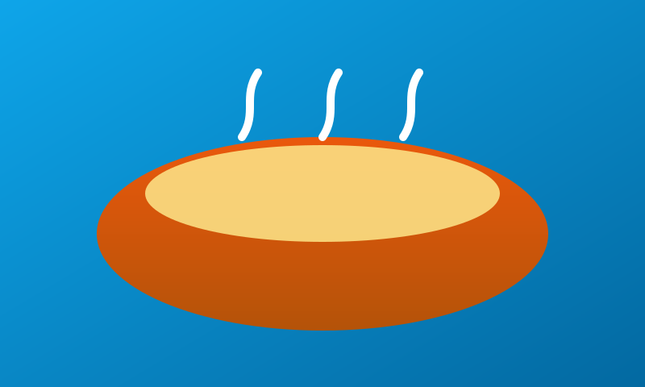
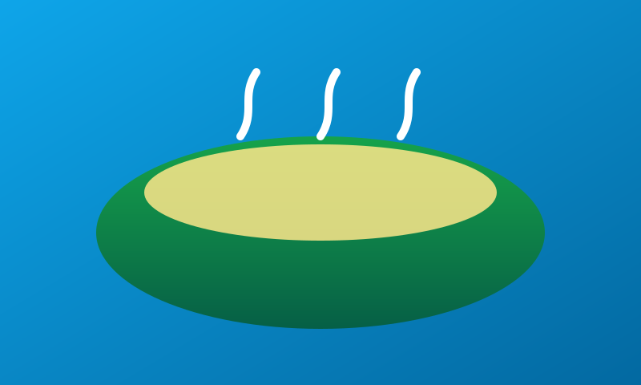
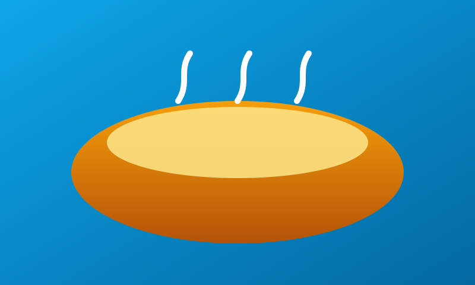
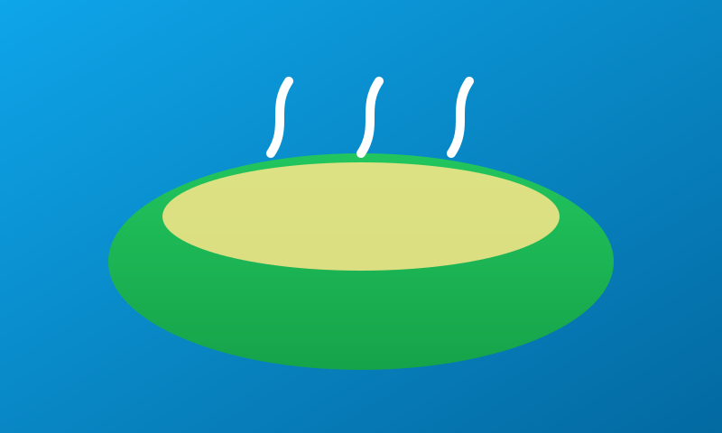

Acarajé
Ingredientes
- 500 g feijão-fradinho; 1 cebola; sal; dendê para fritar.
- Recheio: vatapá, camarão seco, salada, pimenta (opcional).
Modo de preparo
- Descasque o feijão, bata com cebola e sal até massa grossa.
- Modele e frite no dendê quente.
- Abra e recheie.

Moqueca Baiana
Ingredientes
- 1 kg peixe em postas; limão; sal; alho.
- 1 cebola; 1 pimentão; 2 tomates; coentro; pimenta-de-cheiro.
- 200 ml leite de coco; 2 c.s. dendê; 2 c.s. azeite.
Modo de preparo
- Marine o peixe 30 min.
- Camadas em panela de barro; regue com dendê e azeite.
- Some leite de coco no final; fogo baixo até cozinhar.

Vatapá
Ingredientes
- Camarão seco, amendoim, castanha, farinha de pão.
- Leite de coco, dendê, água; alho, cebola, pimentão, coentro, sal.
Modo de preparo
- Bata secos e legumes; leve ao fogo com leite de coco e dendê.
- Misture até engrossar.

Caruru
Ingredientes
- Quiabo, camarão seco, amendoim, castanha.
- Cebola, gengibre, dendê, água, sal.
Modo de preparo
- Refogue cebola no dendê; cozinhe o quiabo.
- Junte pasta de camarão/amendoim/castanha; mexa até engrossar.